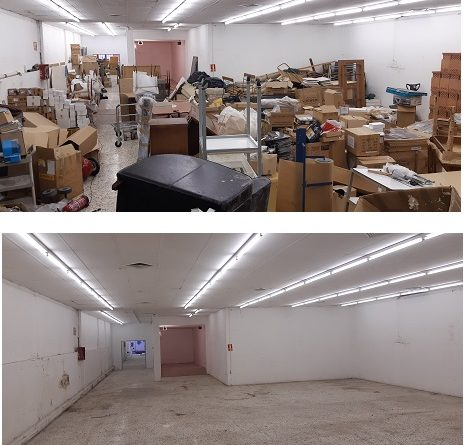

Vaciados completos y responsables
Realizamos vaciados profesionales de pisos, locales y trasteros en Miranda de Ebro. Nos encargamos de todo, incluyendo la retirada de muebles, electrodomésticos y enseres no deseados.
Trabajamos de manera rápida y eficiente, cuidando tus pertenencias y respetando los espacios. Garantizamos la gestión responsable de residuos mediante entidades autorizadas como Onaindia.
Servicios de Vaciado
- Vaciado de pisos completos
- Vaciado de locales y oficinas
- Vaciado de trasteros y almacenes
- Retirada de muebles y enseres
- Gestión de residuos y reciclaje

¿Por Qué Elegirnos?
Somos expertos en vaciados y retirada de enseres. Nuestra profesionalidad, rapidez y atención personalizada nos convierte en la mejor opción en Miranda de Ebro y alrededores.